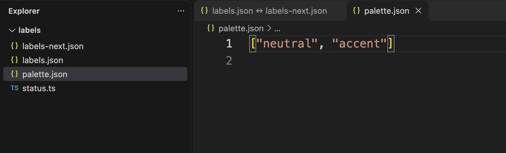
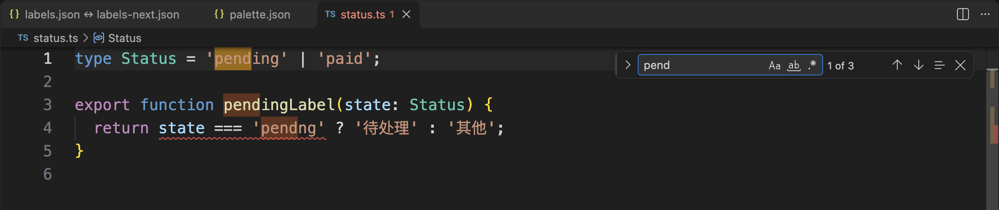
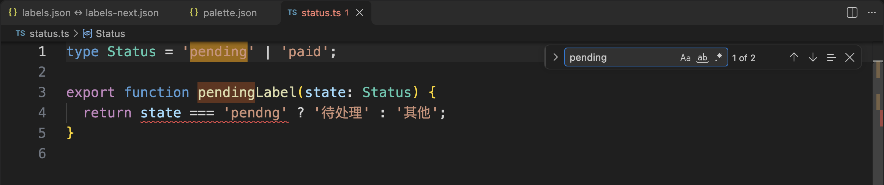
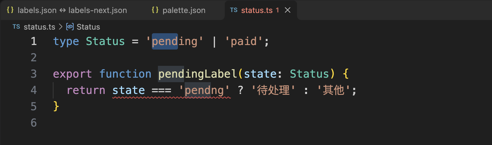
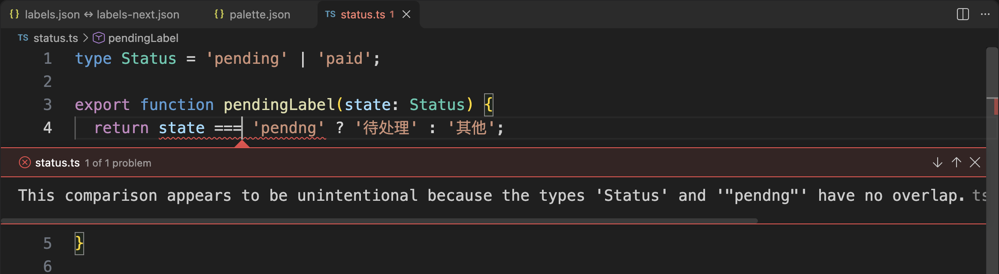
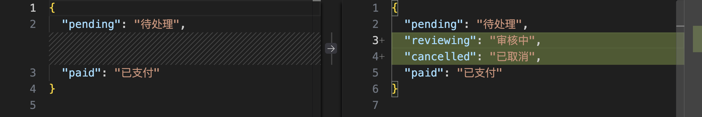

研究问题与分析思路
一项判断应该画在哪里，用多大面积，保留多久？ 从四种肉眼可见的样式出发，先确定标记指向文件、字符、表达式，还是两个版本之间的关系。再看读者能凭标记作出什么决定，什么还要读文字才能知道。
一次只改变一个条件。 打开只含数组的 JSON，核对树中的图标；把查找词从 pend 补全为 pending，对照底色和波浪线；把有两条新增记录的版本放到右边，沿行号检查左侧斜纹究竟占了什么位置。截图保留判断所需的相邻信息。
沿三类材料追溯来源。 语法规范说明花括号在文件里做什么；产品手册和早期软件记录说明某种用法何时已经存在；团队回顾才能直接说明当时怎样取舍。最后用符号学中的相似、指示与约定，解释同一个图形为何可以同时依赖几种读法。
打开 VS Code，屏幕上有两类东西混在一起。一类会随文件保存，例如订单状态里的几个字母、引号和括号。另一类只在阅读条件改变时出现，例如查找命中的棕色底、表达式下的红线、两个版本之间的斜纹。要理解这些样式，可以先问一个很具体的问题：如果我现在复制这一段代码，哪些东西会跟着走？ 括号属于文字；搜索词下方那块颜色记录了我刚刚问过编辑器什么；波浪线记录了检查工具对这段内容的判断。它们在屏幕上占用同一行，来源和寿命却各不相同。
本文的样例只涉及三件事。文案文件保存“待处理”和“已支付”等状态的显示文字；一段小程序根据状态选择文案；另一份文案多了“审核中”和“已取消”。下文六幅局部图均取自 macOS 桌面版 VS Code 1.147.0，使用 Dark Modern 颜色主题和 Seti 文件图标。读图时只需辨认几个英文名字，图中用得上的代码含义会在相应位置解释。
一、花括号从正文走到文件名前，指代的对象变了

先沿着左侧目录往下读。三个以 .json 结尾的文件前各有一对黄色花括号，下面的 status.ts 前是两个字母 TS。点开 palette.json，右边只有方括号和两个带引号的词，整份文件连一个花括号都没有。这个小反例能排除一种似是而非的解释：编辑器没有摘取文件里的第一个符号来做图标。树中的花括号说的是“这份材料按 JSON 类型显示”。正文的方括号说的是“这里有一个有次序的列表”。两者可以同时正确。
花括号为何会让人想到 JSON？看另一份文件就容易理解了。{"pending":"待处理"} 把一个名字和一项值配成对，外面的花括号给这一组成员划出边界。方括号则围住数组，里面可以依次放几项值。2006 年的 RFC 4627 已经记录了这两种写法，现行 RFC 8259 的对象与数组章节仍能查到各自的语法。这个沿革交代了图形从哪里取得熟悉感，也说明为什么图标只能提供线索：花括号还出现在许多别的语言中，JSON 本身也有数组等其他写法。光靠这个字形，无法从零推断文件类型。[1]
文件树对符号有一种正文里没有的要求。打开目录时，文件还是闭合的，用户往往需要从十几行相似名字中挑一个先看。如果每个条目都展开一截内容，屏幕能容纳的文件会变少；只给名字染色，又要让人事先记住黄、蓝各是什么意思。把一种有辨识度的字形固定在名字左边，人的眼睛可以先顺着一条窄列粗分材料，再横移到文件名辨认具体对象。这种做法适合“先缩小范围”。图中三个 JSON 获得完全相同的图标，恰好也暴露了它的限度：要找调色板，最终还得读出 palette。
这个例子有可考的产品史。微软团队的 Chris Dias 在 2016 年回顾过文件树图标的取舍。早期团队一度偏好简洁的无图标文件树，同时担心图标多了难以维护。后来用户反馈和图标扩展的使用情况促使团队重新审视这个决定。他们让文件图标成为可更换的主题，并引入源自 Atom 社区的 Seti 图标。今天的官方文件图标接口仍把图标定义和文件名、扩展名或语言的关联分开。因而这里可以具体说出哪些是谁做的：JSON 语法提供了熟悉的字形，Seti 提供这组图标，VS Code 决定让主题把图形映射到目录对象。现有资料可以追到这条采用路径，未给花括号图标的“第一位发明者”署名。[2] [3]
对读代码的人还有一层差别。目录图标里的左右括号合在一个小方位里，作为整体来认。正文中的一对括号却可以隔开很远，中间容纳许多行；漏掉右边那个字符，文件解释方式就可能改变。同样是两个弯折的形状，一处依赖整体轮廓，另一处依赖前后配对。若设计规范只截出一个花括号写“代表代码”，这两项最重要的差异都消失了。
二、搜索底色的长度就是一次查询的答案

图 2 搜的是四个字母 pend。第一行的 pending 只有前四个字母带底色；第三行的函数名 pendingLabel 也是如此；第四行虽然把待处理的英文拼错成了 pendng，前四个字母仍然匹配。右上角显示三处命中。这个查询没有判断哪一个是正确状态，也没有判断函数名和订单值是不是同一件事。它只回答当前文件里的哪几段字符符合输入条件。矩形的右边界恰好落在第四个字母之后，这条边本身就是结果的一部分。
假如这里改为给整个单词换颜色，函数名会容易找到，但读者会误读命中的长度；如果只在行首放一个小点，第几行有结果是清楚了，长行里哪几个字母符合条件还得重找。反过来，把整行铺色适合回答“结果分布在哪几行”，但一行里若有两处命中，两个结果会合在一个范围里。这次查询的最小有效单位是一段连续字符。紧贴字符行框的矩形能随结果长短伸缩，还给原有文字保留可读的前景。底色最有用的属性其实很朴素：它有一个可以看清的开头和结尾。

在查找框里再输入三个字母，把 pend 补全为 pending。图 3 只剩两处。第一行和第三行的底色都变长了，第四行的底色消失，下面那条红色波浪线还在。对设计者来说，这是一次很干净的观察：文件内容没有动，检查结果没有变，仅仅是读者换了问题。可逆、临时、范围可精确计算，这三个条件使底色很适合承担查询反馈。用户继续打字时，可以直接看画面上哪一块收缩或消失。
一次查找还产生两个不同的数量。在图 2 里，“3”代表符合条件的总数，“1”代表目前正在看的那个。把三个结果一律画得同样强，使用者知道这一屏有东西，却不容易判断再次按 Enter 时从哪里出发；只突出当前项，又失去下一处落在哪里的预告。VS Code 为当前命中、其他命中及相应边框分别提供主题角色。这给主题作者留下两层决定：先保证每一处能被找到，再让其中一处能被准确指认。底色的具体色相可以改变，当前项与其他项的区别仍然要成立。[4]
这个思路有早于 VS Code 的文字记录。GNU Emacs 21 系列的更新说明写到，增量搜索保留原有的当前命中高亮，同时为其他匹配增加另一种高亮。维护者还解释了用途：下一次继续搜索时，人可以预见光标会去哪。这里留下的是很有价值的一手理由，解释了为什么要同时看见当前与其他结果。它证明这种交互思想早已存在，却无法据此推断 VS Code 的棕色矩形直接模仿了 Emacs 某个主题。即使两个产品给出完全不同的配色，也可以实现相同的导航关系。[5]
回到设计师熟悉的文字处理。查找“待处理”与手动选中“待处理”都可能让几个字下面出现一块底色，但下一步完全不同。查找框获得键盘焦点时，输入一个字会改查询条件；回到正文并选中文字时，输入可能替换正文。因而要连同查找框、命中计数和光标所在位置一起读。界面把哪块内容显出来，与它允许用户接下来改什么，是两项独立的信息。画得像一段选区，不能自动取得选区的操作含义。
三、波浪线把质疑放在字下，把理由留给下一层

图 4 中，第一行列出两种允许的状态，pending 和 paid。第四行问“当前状态是否等于 pendng”。少了一个 i，这个值在前面的范围里根本没有。请留意红线的两端：左端从 state 开始，右端到错误值的引号为止。人一眼找到的是拼错的单词，检查工具标出来的却是一次双方取值没有交集的比较。如果重画界面时只给漏字附近画三个波峰，画面更符合“抓错字”的直觉，却会改掉诊断的含义。
把判断贴在文字下缘，有几项可观察的后果。代码原本就用字色区分字符串和其他成分，诊断仍然可以在保留这些区别的同时标出一个连续范围。眼睛从左往右读时，红线提供一条平行于阅读方向的轨迹；只想找问题时，连续起伏又让它与正文下缘拉开距离。普通直线也能划出范围，但在有链接、光标、表格细线和括号边框的界面里，一条细直线更容易混入其他边界。波浪给这条线增加了第二个辨认条件。这里说的是这种几何选择带来的阅读效果，至于某位设计者为什么首次画出波浪，不能从效果倒推出历史。

波浪线在图 4 里只用很小的高度，展开诊断后，图 5 可以用整句话解释两边的取值为什么没有交集，并给出 TypeScript 的诊断编号 2367。VS Code 的诊断接口把范围、消息和严重程度分开记录；使用者也可以从 Problems 问题列表到达相应位置。对熟悉代码的人，一条线足以提示他重读等号左右；对刚开始阅读代码的设计师，只要还不知道 Status 是上面那组允许值的名字，线条画得再红也很难懂。界面需要给这两种阅读深度提供衔接，短标记管定位，完整句子管解释。[6]
红色波浪下划线有一条更早、也更容易辨认的使用传统。微软关于 Word 95 的知识库记录已把它称作自动拼写检查所显示的标记。1998 年《Microsoft Office 98 Macintosh Edition At a Glance》第 76 页还示范了使用过程：写作时有问题的词下出现红色波浪线，作者可以当场查看建议，也可稍后处理。区分“输入正文”和“处理检查器的意见”，在这个早期例子里就已经成立。后来 W3C 的 CSS 伪元素规范把拼写错误、语法错误和搜索命中描述为不同种类的高亮范围，说明这些视觉现象已经可以作为明确的语义类别讨论。[7] [8]
两代软件之间发生了一个有意义的转变。Word 的例子里，标记落在词附近，词典外的专名也可能被提示；眼前这条 TypeScript 诊断落在比较式上，两边单独拿出来都可以是合法文字。用户能迁移的是一种阅读习惯——“这里有检查意见，可以进一步读”——至于检查依据，则来自完全不同的系统。因此，波浪线即便已经成为惯例，也不能独自承担“具体错在哪、是否该改、怎样改”三项责任。可考的 Word 先例已经足以排除 VS Code 首创这种通用样式的说法；这份资料没有追到所有文字系统中最早使用波浪线的人。
四、并排比较中的斜纹，让缺少的对应项也有位置

图 6 的左右两边各是一份完整的文案文件。两边第 2 行都是 pending，表示待处理。右边接着增加两条记录，reviewing 表示审核中，cancelled 表示已取消。再往下，两边又都是 paid。请用手指从左边的 paid 横向划到右边。手指几乎不用改变高度，左边的行号是 3，右边却是 5。两个版本重新对齐的地方，正好落在两行新增内容之后。
现在只看左边那片斜纹。它的高度和右侧两条记录对应，自己却没有行号。如果旧文件真的在这里写了两个空行，行号仍然会前进，下面的 paid 也会排到第 5 行。斜纹区里没有可读取的两个空行；它是并排视图为保存两边的对应关系而留出的显示空间。一个看起来像“背景装饰”的区域，实际上告诉读者怎样从一边读到另一边。这里的“斜线”专指这种成片重复的斜纹；代码里输入的斜杠、路径分隔符以及某些语言的注释符，都另有规则。
如果让左边文字紧接着原样往下排，会发生什么？读者从右边的“审核中”横向寻找旧值，就会碰到左边的“已支付”。那两个词恰好都是订单状态，很容易被误读成“把已支付改成审核中”。如果给左边留下空隙却保持普通编辑背景，这次对齐是成功了，但读者又要判断旧文档里是否真的有两行空白。斜纹给这个两难提供了一个成本很低的解法：留足对齐所需的高度，同时让它在视觉上脱离可读正文。视线可以从上面越过它去读下一句，又能随时沿着它返回右边查新增了多少内容。
纹理和方向如何分工，在这里值得分开看。把斜纹上的任意一根线抽出来，它的倾斜方向没有在指示“增加”或“删除”；把一整片纹理看作面，重复的方向才组织出一种不同于均匀编辑面的表面。真正给出版本方向的是所在的左右栏、与对面内容的对应，以及新增行旁的加号。绿色只出现在有新增文字的一侧。换句话说，斜纹标出哪一边在这一段没有对应正文；加号和版本位置说明新内容出现在哪里。一条孤立的“斜线代表删除”的规范会在眼前这个例子里得出相反结论。
微软主题文档给这类填充单独设了 diffEditor.diagonalFill，并明确说明用于并排差异视图。它把斜纹、插入行的背景、删除行的背景列为不同角色。文档能确认这是一项有名字、可单独调整的产品选择；本文对“防止误认成真实空行”的解释，则来自图中可以逐行复核的结果。工程剖面图也会使用排线，印刷图表也会用纹理区分类别，但图形相似不足以建立历史继承关系。关于 VS Code 这处斜纹，能核实的是产品用途和显示效果，尚无资料指出其首创者或明确的借鉴路径。[9]
这里还有一个容易忽略的 UX 代价。左右分栏牺牲了每侧的文字宽度，并且要占用额外高度来铺出对应关系。换成上下连续的内联差异视图，就可以用加减标记和顺序来说明变化，原先的左右空位也随之失去同样的作用。对于两份很短的文案，人可以直接做横向目视比较；在手机上的小幅截图里，左右两处 paid 都缩得很小，反而要打开原图才能确认。同一标记值得保留，是因为某种阅读方式需要它，换一种排布就值得重新判断。[10]
五、把几种标记放回同一行，才能看出点、线、面的分工
平面构成中的点、线、面，有时会被简化成一套比喻：点吸引注意，线引导视线，面用来分区。编辑器给了我们一个能检验这种说法的场所。图 1 中花括号明明是弯曲的线，放进一列文件名前，却作为一个个小“点”供人扫视；图 6 中的斜纹明明由线组成，读者理解的却是一整块没有对应内容的面。分析要先确定观看尺度。人此刻是在扫一列文件、读一行文字，还是对照两份文档？尺度改变以后，同一个形状可能换一种职务。
点提供地址。 把图 1 缩小到看不清名字，文件树里仍有一个个图标位置。它们适合指示“这里有一项”，不同轮廓可以帮助分类，却几乎无法表达某四个字符从哪里开始、到哪里结束。如果把查找结果简化成一个点，它可以很好地在滚动条上提示大致方位；到了正文里，用户仍然需要一段有长度的标记。这说明同一个结果有时需要在总览和细读两个尺度上各画一次，承担的任务不同。
线贴住一段内容，仍给文字留下自己的表面。 图 4 的红线同时利用了位置、长度和起伏。离开“字的下方”，同样一条曲线画在侧栏顶部，就丢失了指向这段表达式的关系。长度缩为一个字母，会让人以为错误落在一个字符上；把起伏换成普通分隔线，它又容易被读成两个区域之间的边。设计评审比对不同方案时，可以只改其中一个条件，而不是把颜色、粗细、位置一起替换，然后笼统地投票哪个更醒目。
面说明范围，但范围依附于不同的东西。 搜索矩形有多宽，取决于匹配了几个字符；差异斜纹有多高，取决于对面有多少显示空间需要对应。前者所依附的是本栏内真实存在的文字，后者所依附的恰好是另一栏的文字。把截图裁得过紧，只剩一块有颜色或有纹理的矩形，这种差异会变得无从分辨。给 UI 规范配图时，搜索示例至少应留出命中前后的字符，差异示例至少应留出另一侧和前后两组对应行。保留多少上下文，也是一项信息设计决定。
再把图 2 的第四行单独拿出来。'pendng' 有自己的字色，说明它在语言中属于字符串；前四个字母背后的底色说明它符合当前查询；从 state 延伸过来的下划线说明整个比较收到一条诊断。三者的起点、终点和有效时间全都不同。一个设计系统如果规定“组件每次只能显示一个最高优先级状态”，就很难表示这个非常平常的画面。要决定谁覆盖谁，先问用户能不能同时需要三项事实。这里确实需要：他正靠查找定位疑似错误，还得读出被比较的值。
这也解释了为什么整行背景是一种要节制使用的资源。一行文字可以容纳很多带不同含义的小范围，但整行只有一块底。若诊断、查找、选择、版本差异全部争用同样强度的整行填色，后出现的效果会遮掉先出现的解释。给搜索分配字符背景、给诊断分配下缘、给版本比较分配栏位和行号，几种标记就能相互交叉而保留各自的边界。颜色仍然有用；只是增加第四种颜色，解决不了三个状态坚持占用同一块表面的问题。W3C 对“颜色使用”的说明也可作为检查依据，关键信息需要有颜色之外可辨认的线索。[11]
六、从符号学回看：认出一个形状，和读懂它指向什么
皮尔士区分过符号赖以起作用的几种关系：它可能凭相似而为人辨认，凭与对象的实际联系把人指向那里，也可能凭共同使用的规则取得意义。把它们借到界面分析中，比给每个图标贴上“像似符”“指示符”或“规约符”的分类更有用。一处标记常常在几种关系上同时成立；拆开之后才能知道，陌生用户究竟是看不见、找不到指向的对象，还是没学过相应约定。[12]
文件图标里的花括号和正文里的一对括号外形相似，熟悉 JSON 的人能由此联想文件类型；选用这两个字形来代表整个文件，依赖图标主题的约定；它恰好位于 palette.json 左边，又把这个类别关联到这一行文件。三层里任何一层都可能失效。第一次见 JSON 的设计师认得这是括号，却未必知道类别含义。缩小窗口后，同行位置仍清楚，左右弯折却可能糊在一起。左右行对齐一旦错位，即使图标清清楚楚，也可能把类别归给下一行。三类问题分别需要名称、辨识度和位置关系来处理。
搜索底色更多地依靠位置。读者纵然从未见过这款主题，只要在查找框内多输入三个字母，就能看到某几块背景一起改变，并推测两者有联系。操作本身在教人识别符号。波浪线则多依赖一层已有的阅读经验：来自拼写检查的人，很可能知道可以去查原因，但也可能误以为标出来的东西“一定是错别字”。图 5 的诊断消息校正了这类旧经验。惯例让人少学一步，也可能顺带带来一个过窄的解释。好的设计要给人一个机会，在需要时把旧解释修正得更准确。
斜纹提供了第三种学习途径。即使不知道名字，只要顺着 paid 做一次横向对照，再数一次两边的行号，用户也可以从结构里推出那块区域的作用。对第一次阅读版本比较的人，文字说明或清楚的版本标题仍然有帮助；用过几次以后，人可能只要扫过斜纹就知道应当去对面找内容。这里的熟练并非单纯记住“斜纹等于某词”，而是把一次原本要数行才能完成的空间判断缩短成一瞥。
七、把细读转成可检验的 UI 设计判断
评审一个新标记时，可以先拿一份有意制造冲突的小样。让一个文件名与同目录其他文件同类但不同名，让查找词既出现在合法内容里又出现在错误内容里，再在版本对比中只增加两行。这样能检验用户到底读出了什么。只有一个文件、一个结果、一处颜色的理想稿，几乎每一种视觉方案都能让人点对位置；真正区分方案的是同一行同时成立两三种关系，或者同一种关系在切换视图后得换一种方式表达。
在图 2 和图 3 之间，可以请一位很少读代码的同事解释：“第四行刚才有一块底色，现在没有了。这个问题已经修好了吗？”他只要指出红线还在，说明视觉上已经分清了搜索和诊断。再问“为什么第一行保留了底色”，检验他是否读出了字符范围。换到图 6，请他指出左侧第 2 和第 3 行之间原来写了什么。若回答“原来有两个空行”，说明斜纹足以引起注意，对齐关系却没有被读出来。这时值得先补清两侧身份、行号或前后对应项，单纯把斜纹调亮未必能解决误读。这些是可实施的阅读测试，文章没有把它们当成已经访谈得到的用户结论。
回到最初关于起源的疑问，四种样式得到的是四种具体答案。花括号可沿语法和图标主题追到不同来源；查找高亮在早期编辑器中已有“当前项与其他项”的明确设计理由；波浪线可在早于 VS Code 的文字处理手册里找到实际用法；并排差异的斜纹则有产品文档和行号对照可以解释其作用，第一位采用者仍然未知。“这是惯例”只是追问的开端。对于今天做界面的人，更有用的判断是：继承一个熟悉的形状时，使用者原先学会的哪一部分还能用，新的任务又要求他多理解哪一层关系。
上一篇从颜色跟随什么状态变化展开；若想对照同一个工作台如何表达文件修改、报错和版本审阅，可继续阅读《VS Code 工作台的色彩语义》。
注释与资料
- RFC 4627（2006） · RFC 8259，第 4、5 节 · 返回正文
- Chris Dias，File and Folder Icons in VS Code!（2016） · 返回正文
- 文件图标主题接口 · 微软仓库中的 Seti 主题来源说明 · 返回正文
- VS Code 主题角色，见 Editor colors 中的 Find colors · 返回正文
- GNU Emacs 21 的更新记录，见 Isearch changes · 返回正文
- VS Code Diagnostic 接口 · 错误与警告导航 · 返回正文
- 微软知识库 Q133984，Word 95，存档副本 · Microsoft Office 98 Macintosh Edition At a Glance，印刷页 76 · 返回正文
- W3C，CSS Pseudo-Elements Module Level 4，高亮伪元素 · 返回正文
- VS Code 主题角色，Diff editor colors · 返回正文
- VS Code 源代码管理，比较文件修改 · 返回正文
- W3C，Understanding SC 1.4.1: Use of Color · 返回正文
- Charles S. Peirce，Collected Papers 2.304 起，原文节选 · 返回正文